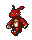
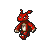
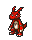
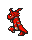
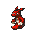
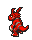

(a) à mão — 4 quadros, bob de respiração ±1px, zero custo
GIFs nativos de cada pipeline, lado a lado, tocando ao vivo (sem merge em um arquivo único — a ferramenta de pixel art do estúdio compõe pranchas estáticas, não GIFs sincronizados; ver prancha_comparativa.png para a versão estática com todos os quadros).





